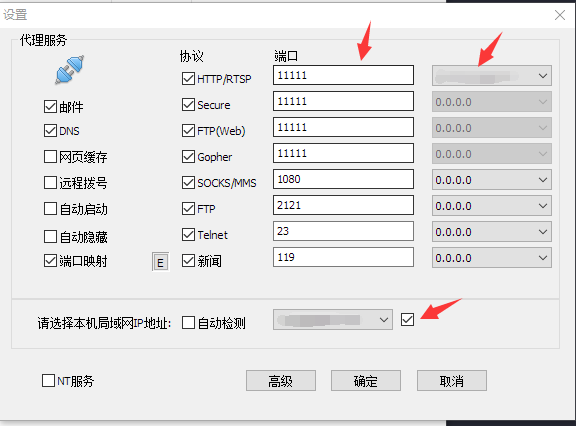

获得了一个新的服务器需要做的事情！
创建用户
用adduser命令
1 | sudo adduser username |
然后输入两次密码就可以了。
这样创建的用户可以有bash！
改为sudo用户的命令
1 | sudo usermod -aG sudo username |
配置Anaconda
直接从之前的服务器上搞一下Anaconda安装的sh，然后运行：
1 | bash Anaconda3-2020.07-Linux-x86_64.sh |
一路回车，中间设置输入一下yes。最后有个添加路径的，也yes一下。
连接外网
写一个自动登陆校园网的脚本，把用户名密码都写死了（当然我也是从别的地方复制的）
1 | import urllib |
Proxy代理
可能直接连外网不行，可以尝试使用代理。
windows端（可连外网端）需要下载CCProxy，然后在设置中的IP设置为自己的IP，端口设置一下：（标红的三处，记得ip要全部设成一样的）
接着在服务器端修改.bashrc文件：
1 | export http_proxy=http://ip:port |
千万不要忘记 source ./bashrc！！！
然后就可以愉快的连外网了，可以顺便修改一下git的代理：
1 | 设置代理 |